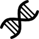

-

Chăm sóc toàn diện
Phục hồi bền vững cho người bệnh
-

Y học hiện đại
Nâng tầm chất lượng điều trị
GIỚI THIỆU VỀ BỆNH LÝ CỘT SỐNG
Bệnh lý cột sống là nhóm các rối loạn ảnh hưởng đến cấu trúc và chức năng của cột sống, bao gồm đốt sống, đĩa đệm, dây chằng và tủy sống. Các bệnh thường gặp như thoát vị đĩa đệm, thoái hóa cột sống, hẹp ống sống, trượt đốt sống và chấn thương cột sống. Những tình trạng này có thể gây đau, hạn chế vận động và ảnh hưởng đến chất lượng cuộc sống của người bệnh. Việc chẩn đoán sớm và điều trị kịp thời, kết hợp giữa nội khoa, phục hồi chức năng và can thiệp phẫu thuật khi cần thiết, đóng vai trò quan trọng trong việc cải thiện triệu chứng và ngăn ngừa biến chứng.
Cột sống
Cột sống là phần giúp nâng đỡ cơ thể và giữ cho chúng ta đứng, ngồi, đi lại bình thường. Cột sống được tạo bởi nhiều đốt xương xếp chồng lên nhau, giúp lưng có thể cử động linh hoạt như cúi, ngửa, xoay người. Đồng thời, cột sống còn bảo vệ tủy sống – một bộ phận rất quan trọng của cơ thể. Vì vậy, khi cột sống bị tổn thương hoặc thoái hóa, người bệnh có thể bị đau lưng, hạn chế vận động và ảnh hưởng đến sinh hoạt hằng ngày.
Xem video
Bệnh lý trượt, hẹp cột sống thắt lưng
Bệnh lý trượt và hẹp cột sống thắt lưng là những bệnh lý thường gặp, đặc biệt ở người trung niên và cao tuổi. Trượt cột sống xảy ra khi một đốt sống di lệch khỏi vị trí bình thường, trong khi hẹp cột sống là tình trạng ống sống bị thu hẹp, gây chèn ép lên các rễ thần kinh. Hai tình trạng này thường liên quan đến quá trình thoái hóa, thoát vị đĩa đệm hoặc chấn thương, dẫn đến các triệu chứng như đau thắt lưng, tê yếu chi dưới và hạn chế vận động.
Xem video
Giới thiệu về phẫu thuật cột sống thắt lưngg
Phẫu thuật cột sống thắt lưng là phương pháp điều trị được chỉ định khi các biện pháp nội khoa không còn hiệu quả trong các bệnh lý như thoát vị đĩa đệm, hẹp ống sống, trượt đốt sống hoặc chấn thương vùng thắt lưng. Mục tiêu của phẫu thuật là giải phóng chèn ép thần kinh, phục hồi cấu trúc giải phẫu và cải thiện chức năng vận động cho người bệnh. Tùy từng trường hợp, các kỹ thuật có thể bao gồm mổ mở hoặc phẫu thuật ít xâm lấn, giúp giảm đau, rút ngắn thời gian nằm viện và nâng cao chất lượng cuộc sống sau điều trị.
Xem videoPHỤC HỒI SỚM SAU PHẪU THUẬT ERAS
Phục hồi sớm sau phẫu thuật – Vì sự an toàn và chất lượng cuộc sống của người bệnhLỢI ÍCH CỦA CHƯƠNG TRÌNH ERAS
- Giảm đau sau phẫu thuật hiệu quả hơn
- Rút ngắn thời gian nằm viện
- Giảm nguy cơ biến chứng
- Giúp người bệnh sớm trở lại sinh hoạt bình thường t
- Nâng cao chất lượng cuộc sống sau điều trị